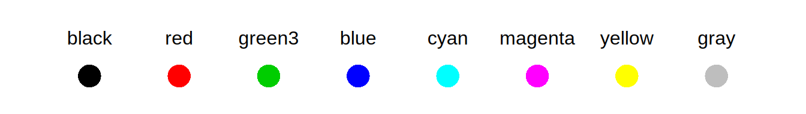
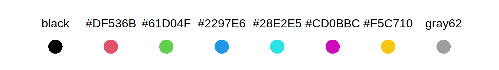
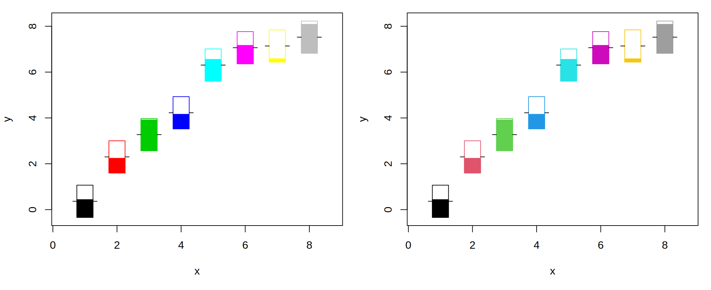
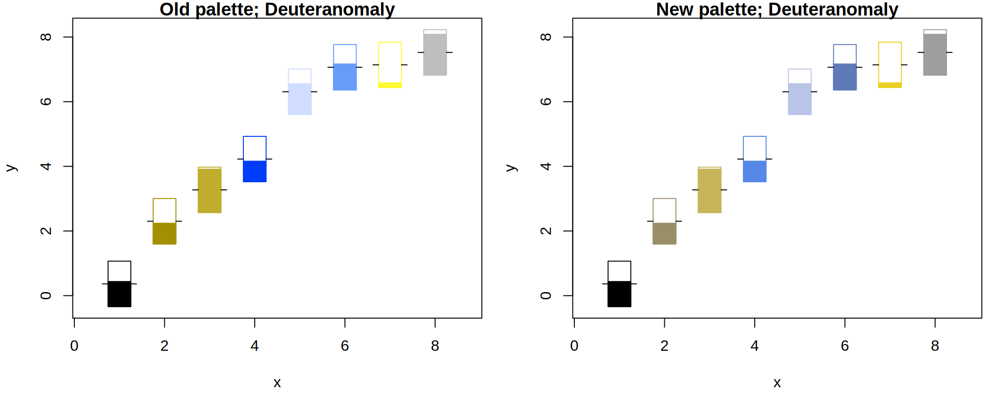
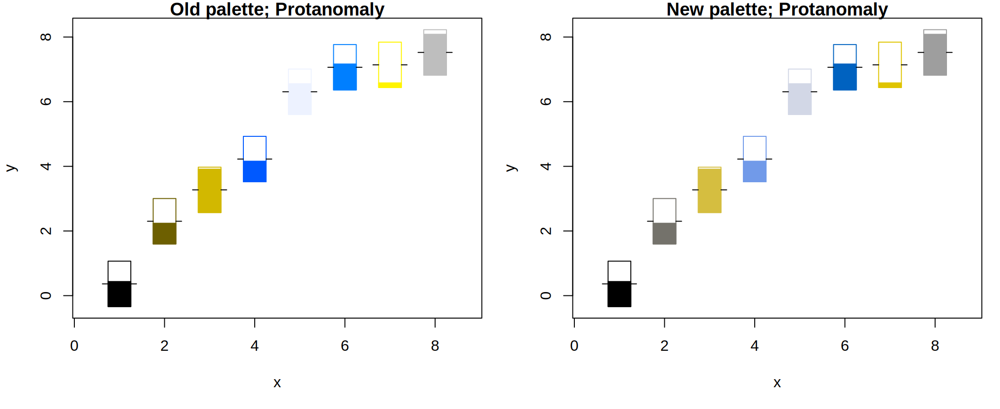
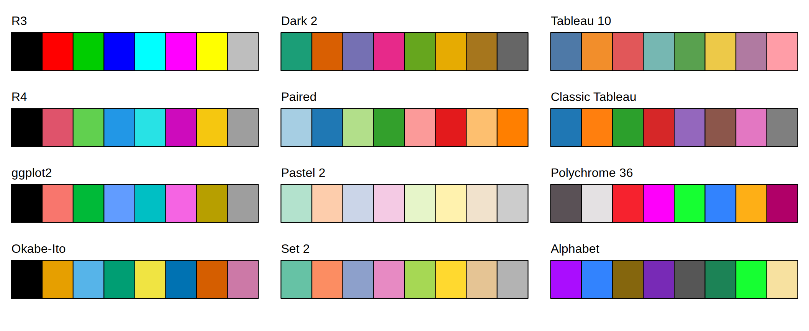

palette()
## [1] "black" "red" "green3" "blue" "cyan" "magenta" "yellow"
## [8] "gray"UPDATE 2019-12-03: Following feedback, the new default palette has been tweaked so that the new “magenta” is a little redder and darker and the new “yellow” is a little lighter and brighter. The former is to improve the discriminability between “blue” and “magenta” for deuteranopes and the latter is to improve the discriminability between “green” and “yellow” for protanopes. We would like to thank those who provided feedback and suggestions on the new palette, in particular Antonio Camargo, Brenton Wiernik, Ken Knoblauch, and Jakub Nowosad.
In R, it is possible to specify a color in several ways: by name, col = "red"; by hex code, col = "#FF0000"; or by number, col = 2. The last of these, a numeric color specification, is a numeric index into a “color palette”, which is controlled via the palette() function. Without any arguments, this function returns the current set of palette colors; as we can see, the second color in the default palette is "red", so col = 2 corresponds to red.
Unfortunately, there is a significant problem with this default color palette: it is horrible. The colors are highly saturated (garish, flashy) and vary enormously in terms of luminance (e.g., "yellow" is much lighter than "blue").

This post introduces a new default color palette for R, describes how it was chosen, and also demonstrates some new extensions to the color palette functionality. TL;DR, The new palette uses similar hues but is more balanced in terms of luminance and avoids extremely garish colors.

Choosing the new palette
The following criteria were used to select the new color palette:
The palette should follow the same basic pattern as the old palette: black, red, green, blue, cyan, magenta, yellow, and gray. This was essentially for backwards-compatibility, particularly of documentation. If a figure uses
col = 2and the accompanying text refers to it as red, it should not be completely wrong with the new palette.In addition to hue, chroma (colorfulness) and luminance (brightness) may also vary in the palette to make the colors more distinct but differences should not be too large. This is to avoid one color having a much larger visual impact than another.
The palette should work well for coloring points and lines on a white background. This means that the colors should be relatively dark and colorful.
The colors in the palette should be clearly distiguishable, including for viewers with color vision deficiencies, especially deuteranomaly and protanomaly, the two most common forms of red-green deficiencies (https://en.wikipedia.org/wiki/Color_blindness).
We worked within the HCL (hue-chroma-luminance) color model, which tries to capture the perceptual dimensions of the human color vision system. This color model was also employed in the recent additition of the function grDevices::hcl.colors() which was inspired by the colorspace package and which brings a broad range of qualitative, sequential, and diverging palettes to base R. See the accompanying arXiv paper and https://zeileis.codeberg.page/colorspace/ for more details on employing the HCL color model for obtaining color palettes.
The criteria above limited the new palette to specific ranges of hue, chroma, and luminance and functions from the Polychrome package were used to generate potential sets of colors and to measure the visual differences between them. See the accompanying JSS paper for more details.
Some final manual tweaks were applied to balance the goals of the palette. Along with the new default palette, various other balanced color palettes are offered as alternatives (including colors from ggplot2, ColorBrewer, and Tableau, among others).
Demonstrating the new palette
Specifying colors by number is not particularly common, but it is an easy way to demonstrate use of color in examples, so it occurs a number of times in R documentation. Additionally, it is not uncommon to select colors by number when adding a few lines to an otherwise monochrome plot (e.g., the diagnostic scatter plots in plot.lm). The new predefined palettes also make the use of numeric color specifications a more sensible and effective option.
The following images show how poor the result was with the old palette and how much better it is with the new palette, using an example from the symbols() help page. This was selected as an example here because the thermometer symbol combines coloring lines with shading areas. Thus the plot below brings out both aspects (based on random input data).

In the old palette colors 5 and 7 were much lighter and hence the corresponding symbols are harder to read and blend in with the white background. In contrast, the new palette gives similar perceptual weight to all symbols.
Moreover, the following images simulate the appearance of the two palettes for deuteranomaly and protanomaly (using deutan() and protan() from the ‘colorspace’ package). Notice, for example, the improved discriminability between colors 1 and 2 and between colors 4 and 6 with the new palette.


New features
It is also possible to set up a new color palette with the palette() function. This can be achieved by specifying an argument to palette() that is either a character vector of colors (color names or hex colors) or a single character value that gives the name of a predefined palette.
Previously, the only predefined palette name that palette() accepted was "default"; that was one way to restore the default color palette. But along with the new default palette, various new predefined palette names are now supported. All of these are already well-established, widely used, and based on well-founded construction principles and/or thorough testing.
"R3"is the old default palette (for backward-compatibility up to R version 3.x.y)."R4"is the new default palette (same as"default", starting from R version 4.0.0)."Okabe-Ito"is a well-established palette introduced by Masataka Okabe & Kei Ito that is well-suited for color vision deficiencies."Accent","Dark 2","Paired","Pastel 1","Pastel 2","Set 1","Set 2", and"Set 3"are all palettes from the popular ColorBrewer color sets for cartography (by Mark A. Harrower & Cynthia A. Brewer)."ggplot2"is based on the default (hue-based) color scale introduced by Hadley Wickham in ggplot2."Tableau 10"and"Classic Tableau"are default palettes (by Maureen Stone & Cristy Miller) from the popular Tableau visualization software."Polychrome 36"and"Alphabet"are large sets of distinguishable colors from the Polychrome package (by Kevin R. Coombes & Guy Brock).
The color swatches below show the first eight colors from most of the predefined palettes (except a few of the ColorBrewer palettes). Note that some of these palettes provide more colors, especially "Polychrome 36" and "Alphabet", which provide 36 and 26 colors, respectively.

To facilitate the adoption of these new palettes, two new accompanying functions are provided:
palette.pals()returns the names of the predefined palettes.palette.colors()returns a vector ofncolors from one of the predefinedpalettes, optionally with analphachannel for semi-transparency. This allows colors from the new predefined palettes to be used directly with graphical functions instead of going through a numeric index and thepalette()function.
The palette.colors() function complements the qualitative palettes provided by the hcl.colors() function. The hcl.colors() function provides a number of qualitative palettes that are very balanced by only varying hue and keeping chroma and luminance fixed. While this is desirable in many displays, it decreases distinguishability, in particular for viewers with color vision deficiencies. This is why the palettes in palette.colors() allow chroma and luminance differences within a limited range (as mentioned above).
Finally, another small improvement is to make sure that calling palette() does not open a new graphics device when no graphics devices are open.
Summary
The default palette() in R is no longer utterly horrible.
Several new predefined palettes, and a new palette.colors() function, provide a sensible and simple way to generate a set of distinguishable colors for representing qualitative changes in data.
Hopefully, the new palette does not muck up existing uses of numeric color specifications (especially in documentation), but we would be glad to hear of any issues (please email Paul.Murrell@R-project.org or Achim.Zeileis@R-project.org).